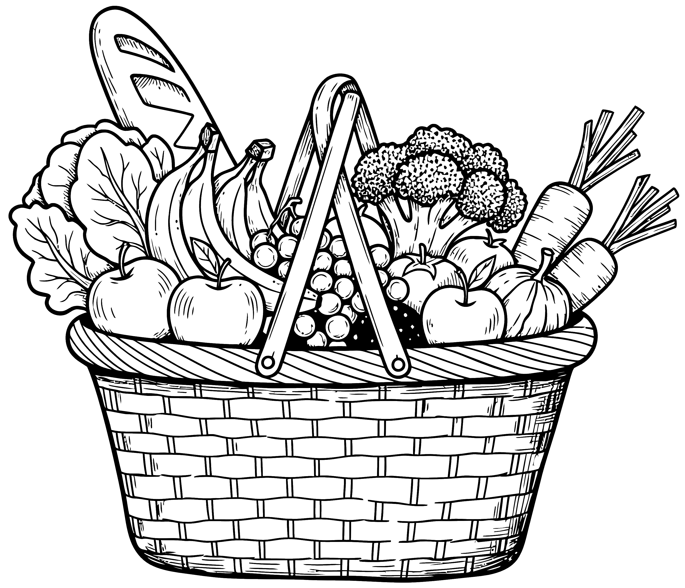
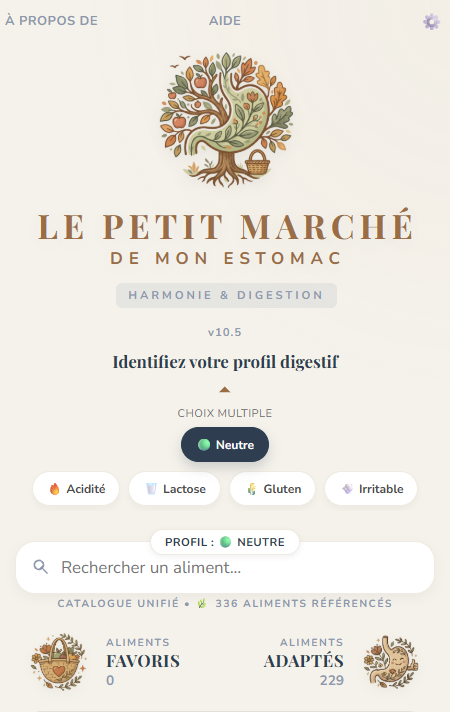
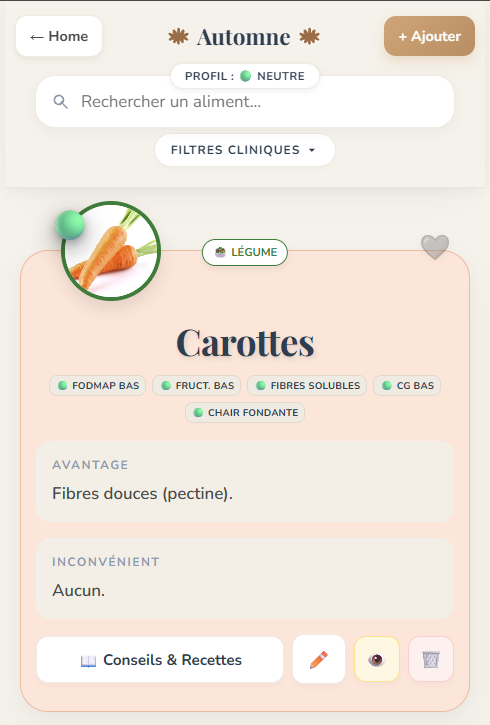
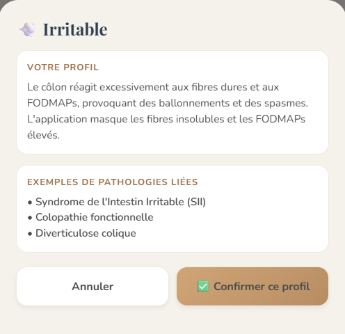
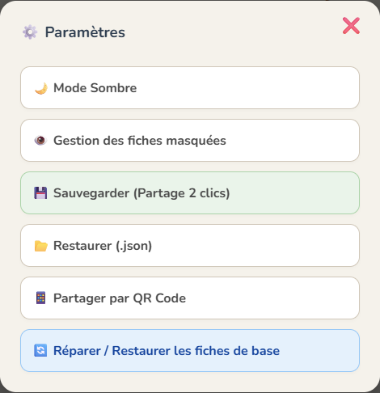
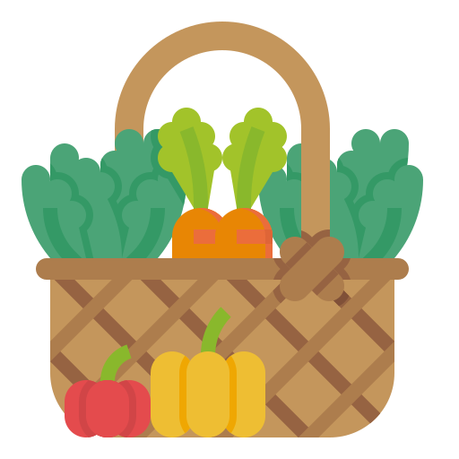

Votre guide nutritionnel personnalisé au rythme des saisons. Une approche bienveillante et clinique conçue pour apaiser votre digestion au quotidien.

Sélection de profils en un clic, recherche rapide et accès aux saisons.

Analyse complète : FODMAPs, fibres, glycémie, acidité et recettes adaptées.

Explications médicales pour chaque sensibilité (RGO, lactose, côlon...).

Mode sombre protecteur, partage par QR code et restauration sécurisée.
Sélection multiple : Croisez vos besoins (ex: Acidité + Gluten ou Lactose + Irritable) pour filtrer instantanément vos aliments. L'application masque ou signale les incompatibilités selon votre métabolisme.
Un mode sombre unique aux tons "Moka et Verre Fumé", conçu pour reposer vos yeux le soir sans perdre la couleur d'origine des saisons.
Aucun compte, aucun serveur, zéro pistage publicitaire. Vos notes personnelles et vos recettes de famille restent exclusivement dans votre téléphone.
Gérez vos Favoris ❤️, masquez les fiches inutiles 👁️, ajoutez vos propres notes et liez vos recettes préférées directement sur chaque aliment.
Besoin d'aide ? Un guide complet est disponible à tout moment directement dans le menu "Aide" en haut de l'application.

Fermez votre navigateur et lancez l'application directement depuis la nouvelle icône sur votre page d'accueil.